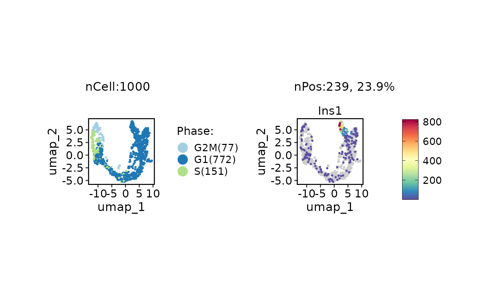
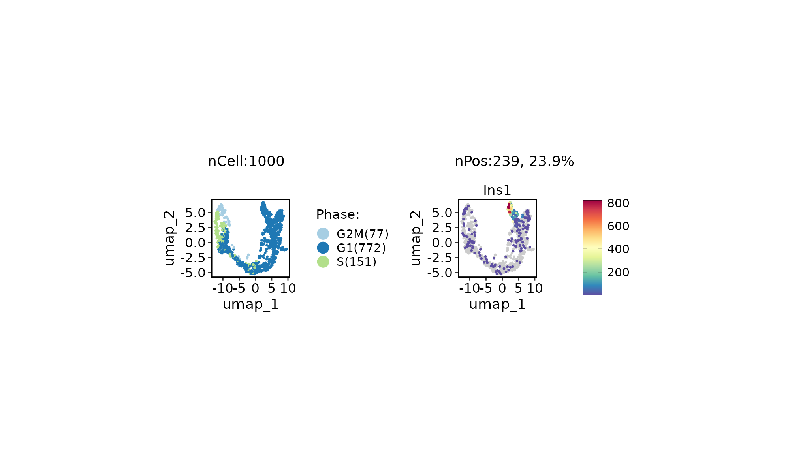
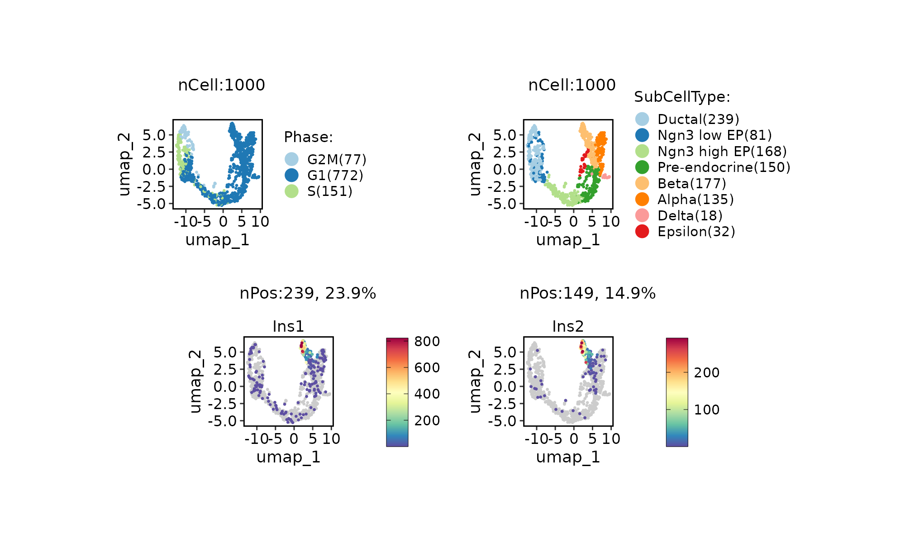
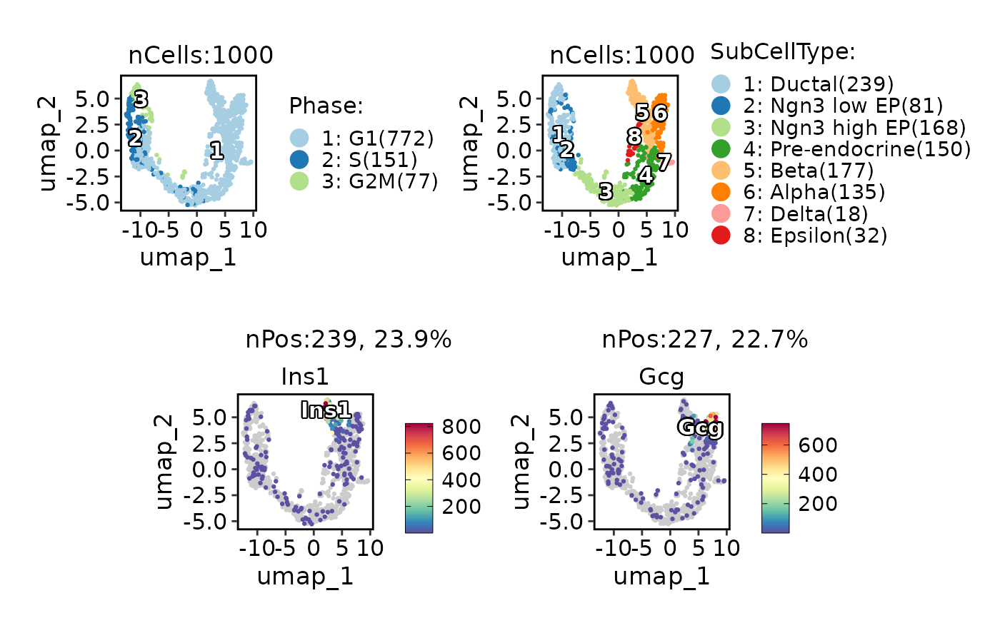

The ggplot object, when stored, can only specify the height and width of the plot, not the panel. The latter is obviously more important to control the final result of a plot. This function can set the panel width/height of plot to a fixed value. The plot to be fixed can be a ggplot or a plot combined using plot_grid or patchwork functions.
Usage
panel_fix(
x = NULL,
width = NULL,
height = NULL,
margin = 0.5,
space = 0.1,
units = "in",
bg_color = "white",
raster = FALSE,
dpi = 300,
return_grob = FALSE,
save = NULL,
verbose = TRUE,
...
)Arguments
- x
A ggplot or grob object.
- width
The width of the panel.
- height
The height of the panel.
- margin
Margins around the plot when
fileis specified.- units
The units in which
height,widthandmarginare given. Can bemm,cm,inches, etc. Seeunit.- save
NULL or the file name to save.
- ...
Value
If filename is not specified, no return; otherwise return a list objects:
grobAn R object of class "grob", a graphical object.plot_sizePlot size after fixing the panel size and the margin.unitsThe units used.
Examples
library(ggplot2)
p <- qplot(mpg, wt, data = mtcars, colour = cyl) + facet_wrap(~gear, nrow = 2)
#> Warning: `qplot()` was deprecated in ggplot2 3.4.0.
p_fix1 <- panel_fix(p, width = 5, height = 3, units = "cm")
#> More than 2 panels detected. panel_fix may not work as expected.
p_fix2 <- panel_fix(p, width = 5, height = 3, units = "cm", raster = TRUE, dpi = 72)
#> More than 2 panels detected. panel_fix may not work as expected.
p_fix1

p_fix2

## Save the plot with appropriate size
# plot_size <- attr(p_fix1, "size")
# ggsave(
# filename = "p_fix.png", plot = p_fix1,
# units = plot_size$units, width = plot_size$width, height = plot_size$height
# )
## or save the plot directly
# p_fix1 <- panel_fix(p, width = 5, height = 3, units = "cm", save = "p_fix.png")
data("pancreas_sub")
p1 <- ClassDimPlot(pancreas_sub, "Phase") # ggplot object
p2 <- ExpDimPlot(pancreas_sub, "Ins1") # ggplot object
p <- p1 | p2 # plot is generated by patchwork
panel_fix(p, height = 1)
#> More than 2 panels detected. panel_fix may not work as expected.
#> panel 7 is detected as generated by patchwork.
#> panel 14 is detected as generated by patchwork.

library(cowplot)
p1 <- ClassDimPlot(pancreas_sub, c("Phase", "SubCellType")) # plot is generated by plot_grid
p2 <- ExpDimPlot(pancreas_sub, "Ins1") | ExpDimPlot(pancreas_sub, "Ins2") # plot is generated by patchwork
p <- plot_grid(p1, p2, nrow = 2) # plot is generated by plot_grid
panel_fix(p, height = 1)
#> panel 6 is detected as generated by plot_grid.
#> panel 6 is detected as generated by plot_grid.
#> More than 2 panels detected. panel_fix may not work as expected.
#> panel 7 is detected as generated by patchwork.
#> panel 14 is detected as generated by patchwork.
